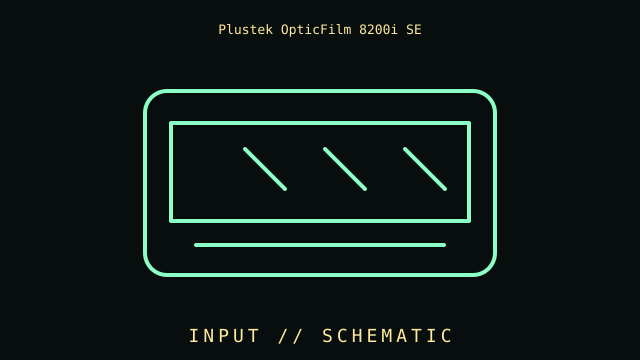

[ INDIVIDUAL COMPONENT // INPUT DEVICES ]
Plustek OpticFilm 8200i SE
USB 2.0 35 mm film scanner with 7200 dpi optical resolution and infrared-assisted dust processing. This entry identifies this product generation and distinguishes important interface and revision differences.

MODEL IDENTIFICATION: Check the label for the complete model, revision, regional SKU, accessories, and current manufacturer documentation before installation.
Specifications
| Catalog subcategory | Imaging and audio-capture peripherals |
|---|---|
| Catalog identity | Plustek OpticFilm 8200i SE |
| Era / family | Dedicated 35 mm film scanner |
| Product-specific features | 7200 dpi optical resolution for 35 mm slides/negatives; infrared channel supports iSRD dust/scratch processing; bundled SilverFast SE Plus workflow. Results depend on film, focus, holder, and settings. |
| Interface | USB 2.0 host connection; manual film holders position slides or strips. Not a flatbed or document feeder. |
| Compatibility guidance | Use vendor-supported Plustek/SilverFast software and OS driver; check current OS support and bundle license. Confirm holder and cable are present. |
| Variants and service note | 35 mm film only. Infrared dust processing works with compatible film and is not effective on every black-and-white emulsion. |
Installation & compatibility checks
- Record the exact model/revision, interface mode, receiver or cable identity, firmware, driver version, and supported host before testing.
- Check connector, power, protocol, OS/driver, and application support separately; physical connector fit alone does not establish feature compatibility.
- For wireless models, preserve original receivers and pairing data. Test wired and radio modes independently where both are provided.
- Do not infer performance from manufacturer maximums alone; note settings, application, host, and measurement method for measured results.
Model notes
35 mm film only. Infrared dust processing works with compatible film and is not effective on every black-and-white emulsion.
Use vendor-supported Plustek/SilverFast software and OS driver; check current OS support and bundle license. Confirm holder and cable are present.
Sources & further reading
- Manufacturer — Plustek OpticFilm 8200i SE product specificationsProduct reference; confirm exact variant and regional SKU.
- Manufacturer — Plustek OpticFilm 8200i SE support and manualsSupport reference for drivers, manuals, and revision-specific guidance.
Manufacturer model references are authoritative for exact revisions and regional variants. Specifications can differ by package, firmware, region, and driver generation.